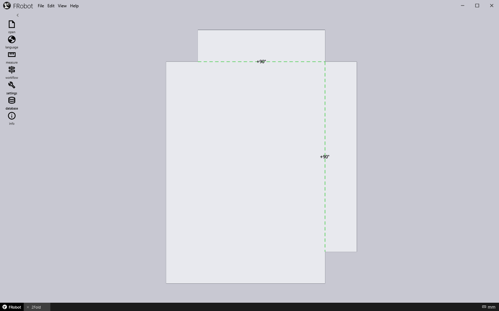
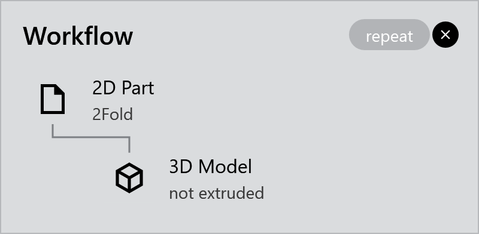
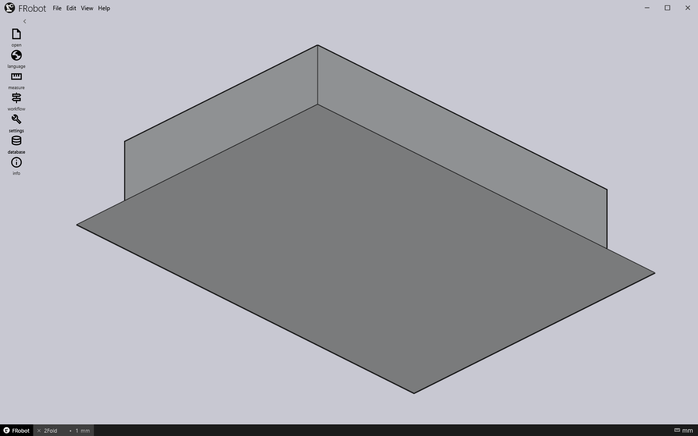
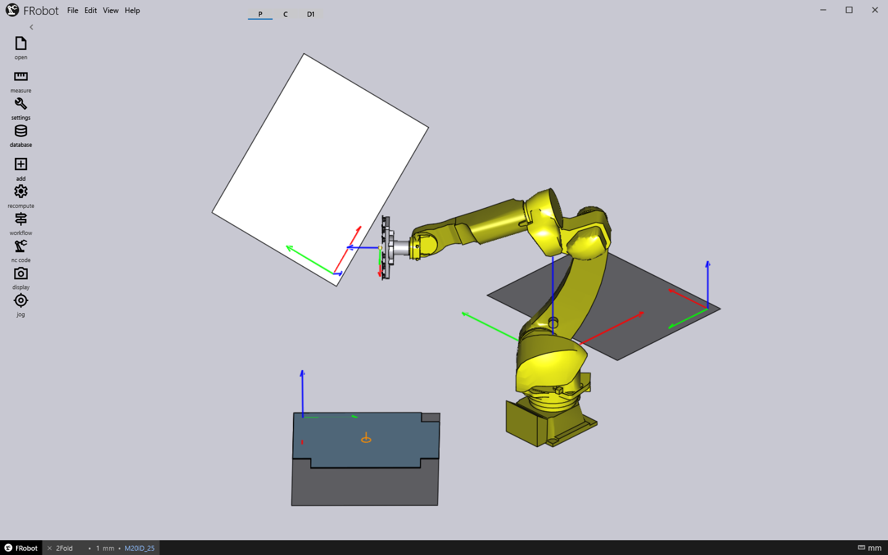
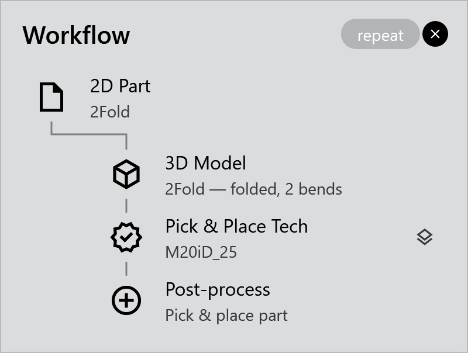

Your first program
This walk-through takes the sample part 2Fold from its flat drawing to a robot program. It uses the M20iD_25 robot and its default cell, which has a pickup pallet, a centering table and a deposit. It takes about five minutes.
1. Open the cell
-
Choose File ▸ Open… (or the open button on the rail).
-
In the installation folder, go to CellConfigs\M20iD_25 and open Default.curl.
The cell appears in the 3D view and the Workflow window opens. The Workflow window shows the steps from part to program; you will use it throughout.
|
Note
|
Don’t skip this step on a new installation. FRobot first starts on the FanucX robot, whose cell is empty: with no pickup pallet, Pick & Place Tech can’t create a solution. |
2. Open the part
-
Choose File ▸ Open… again.
-
Go to Samples\SampleParts\2d and open 2Fold.geo.
The drawing appears flat, seen from above, and the cell is hidden while you look at it. The green dashed lines are the bend lines, each with its bend angle.

The bottom bar now shows the part’s name, 2Fold. If the Workflow window is not open, click workflow on the rail.

3. Make the 3D model
Click 3D Model in the Workflow window.
FRobot makes the part 3D. The sheet is 1 mm thick, or the thickness given in a GEO file, and the stack holds 5 parts. The part is shown folded, as the machine will bend it.

You can change the thickness in the bottom bar: type it and press Enter. See Thickness, material and the stack.
4. Create the solution
The Workflow window now offers Pick & Place Tech, with a blue glow. Click it.
FRobot does the rest in a few seconds:
-
It chooses a gripper that can hold the part, and says which in a toast, for example Gripper Vac_Grip chosen for 2Fold (3.53 kg): holds 3.8 kg.
-
It places the stack on the pickup pallet.
-
It plans the cycle: from Home to the pickup, to the centering table, to the deposit and back to Home.
The window is dimmed while it plans. Then the whole cell appears:

Three things have changed:
-
The tool rail now has the full set of tools.
-
The phase strip in the title bar shows one cell per phase: P (Pickup), C (Centering) and D1 (Deposit).
-
The Workflow window shows the whole pipeline.

5. Check the cycle
-
Read the phase strip. Grey cells mean the phase is fine. A yellow cell has a warning and a red cell has an error; hover over a cell to read what is wrong. See The phase strip.
-
Watch the cycle. Move the mouse over the phase strip: a tray drops down with a scrubber and the transport buttons. Click Play (▷).

-
Look at a phase closely. Click a phase cell. The robot goes to where that phase handles the part, and the Waypoints panel opens on that phase. See Waypoints.
6. Write the robot program
-
Click nc code on the rail.
-
FRobot asks Generating NC Code … Do you want to generate code? Click Yes.
NoteIn this version the question always mentions collisions, even for a clean cycle. Rely on the phase strip instead: if every cell is grey, the cycle is clean.
-
The Output NC window shows the progress. It writes Output\2Fold.rbc in the installation folder. If a post-processor is set up, it then runs it to make the FANUC program.
7. Save the solution
-
Choose File ▸ Save.
-
The Save Solution dialog suggests the name 2Fold.fr. Choose a folder of your own, not the Samples folder, and click Save. (Once a solution has a file, Save writes over it without asking.)
A toast confirms Solution saved: 2Fold.fr. The .fr file holds the cell, the part, the gripper and the whole cycle. Opening it later brings everything back exactly as it was, without planning again. See Solutions.
Next: set up your own cell (Setting up the cell), or learn more about checking a cycle (Planning and checking the cycle).